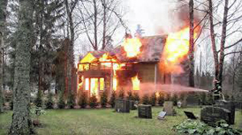
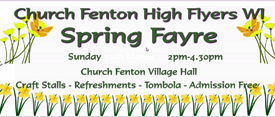
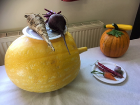
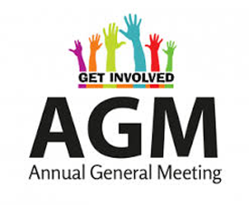
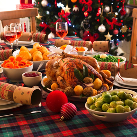
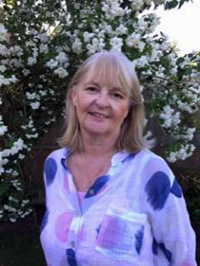
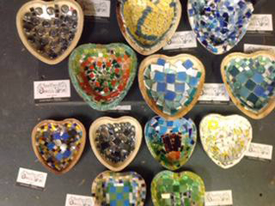
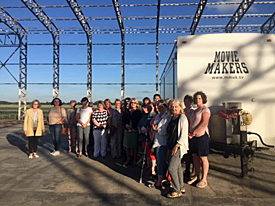
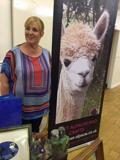

High Flyers WI
'The Women's Institute is based on the idea of bringing women together, providing them with educational opportunities and the chance to make a difference in their communities.'
The Church Fenton High Flyers WI group is a wonderful group of local ladies who meet up once a month and also organise and host events within our village. We meet on the fourth Thursday of every month at 7.30pm in the Church Fenton village hall, unless our varied programme dictates otherwise (please see below for programme of events). We also organise trips and there are opportunities to take part in national events, also.
We would be delighted to welcome you to our next meeting. Feel free to come to any meeting as an occasional visitor for £5 and try before you think about becoming a member. You can come to every meeting as a visitor if you prefer and don’t actually want to become a member.
This is a great way to meet new people in the village and take part in activities you would perhaps not have done on your own. We are delighted to raise funds via our annual Spring Fayre and Produce Show and for local village projects as well as charities. We also support less advantaged women & girls via the ‘Smalls for All’ campaign.
For those who don’t like walking into somewhere on their own, we can arrange for you to meet one of our group beforehand, you will be given a very warm welcome.
For further information, contact our Secretary.
Calendar of Events 2023
Please note, some or all of these events may have been cancelled due to the on-going Covid-19 restrictions. Please contact the Secretary to get the latest information on these events.
Thursday 26th January at 7:30pm, Church Fenton Village Hall
An evening of Pampering with Kate Roberts from The Body Shop at Home. Learn how to give yourself a facial at home. Test a wide variety of Body Shop products, learn how to apply them and what the benefits are to your skin.
Thursday 23rd February at 7:30pm, The Fenton Flyer
It’s time for our annual darts competition at the Fenton Flyer. Enjoy an evening of fun and friendly competition over some lovely food and drink. All abilities welcome.

Thursday 23rd March at 7:30pm, Church Fenton Village Hall
An interesting evening learning all about the life and work of a forensic fire officer. An informative talk followed by a friendly catchup with plenty of food and drink.

Sunday 26th March, 2-4:30pm, Church Fenton Village Hall
Annual Village Spring Fayre. With plenty of stalls, tombola prizes, refreshements and cake for all to enjoy.
Thursday 27th April at 7:30pm, Church Fenton Village Hall
A fantastic evening of learning about Cheese from Rachel Cheshire who runs Celebration Cheeses in Ulleskelf.
Thursday 25th May at 7:30pm, Church Fenton Village Hall
A wonderful talk by Mr Sweeting about flower arranging. Mr Sweeting will talk us through how to arrange flowers whilst showing us how to make three different arrangements. This will be followed with refreshments and a chance to catchup.
Thursday 22nd June at 7:30pm, Church Fenton Village Hall
TBC
Thursday 27th July at 7:30pm, Church Fenton Bowls Club
Chance to take part in an evening of bowls at our local bowls club. Indoor or outdoor (weather permitting). All abilities very welcome with food, drink and a chance to catchup to follow.
Thursday 24th August at 7:30pm, Church Fenton Village Hall
Time for our annual Summer Social evening. A chance to spend an informal evening enjoying food, drink and conversation on a (hopefully) warm and sunny, summer evening.

Sunday 10th September, 2-4pm, Church Fenton Village Hall
Annual Village Produce Show
A lovely day of produce competition and judging, raffle, auction, refreshments and of course, plenty of cake.
Thursday 28th September at 7:30pm, Church Fenton Village Hall
A thought-provoking talk about your garden and climate change by Angela Muskin. Followed by food, refreshments and a chance for conversation.

Thursday 26th October at 7:30pm, Church Fenton Village Hall
AGM
It’s time again, for our Annual General Meeting. This runs alongside our cheese and wine evening which makes for an enjoyable evening.
Thursday 23rd November at 7:30pm, Church Fenton Village Hall
Come and enjoy a fun, friendly and informal quiz and games night complete with food, drink and conversation.

December 2020 TBC
Christmas Meal
Date and venue TBC nearer the time.
Meet some of our Members
Judith Mawson - President
About Judith: I have lived in the area for nearly 20 years and work locally. I enjoy reading, baking, sewing and yoga and love spending time with family and friends.
Why I joined the WI: I have been a member of our WI since it was re-started about ten years ago and joined because I wanted to meet new people and become involved in making a difference in the local community.
My two favourite meetings: National Trust talks(leading to two visits), line dancing!
Amy Woodcock - Secretary
Contact details:
email: amywoodcock235@gmail.com

Lesley Wright - Treasurer
About Lesley: I have lived in the village since 2003 and met a huge number of people through WI. I am a founder member Church Fenton Community Hub who have helped to purchase the White Horse Pub and I volunteer at the Community cafe once a month as I love to bake.
Why I joined the WI: Working full time in the NHS and travelling the country with my job, I never seem to have the time, however, I realised you need to make time for yourself.
My two favourite meetings: A visit to the Set of Victoria, Mosaic making.
Contact details:
email: lesley@lesleywrightimprovement.co.uk
telephone: 07887 553024
Some of our Favourite Moments
Below are photos of some of our favourite moments.

Mosaic Evening - All our own work
We were delighted to welcome Jenny Watson who facilitated a Mosaic evening. This was a practical workshop and we all got stuck in to making our own small heart shaped bowls.
A practical evening, which was great fun and very creative, even for those who are not arty.

Trip round the set of Victoria - Buckingham Palace in Hangar 1
We were highly honoured to be allowed a trip around Mamoth Studios at Leeds East Airport, formerly RAF Church Fenton. Viewing is normally not permitted during filming due to confidentiality issues. As we agreed not to take internal photos we had an amazing tour of the set of Buckingham Palace.
It was breathtaking, looking at all the sets, Victoria's bedroom, throne room, ballroom and the downstairs servants quarters.
Thanks must go to Sally Joynson from Screen Yorkshire who facilitated the visit, when something like this is on our doorstep, we really appreciated the chance to access this.

All About Alpacas
One of our speakers was from Sherburn In Elmet, couldn't get more local. Sam Harrison gave a fascinating insight into how she became involved in raising Alpacas.
This has lead to an amazing learning opportunity for local children to visit and some beautiful art and craft items made from Alpaca wool.